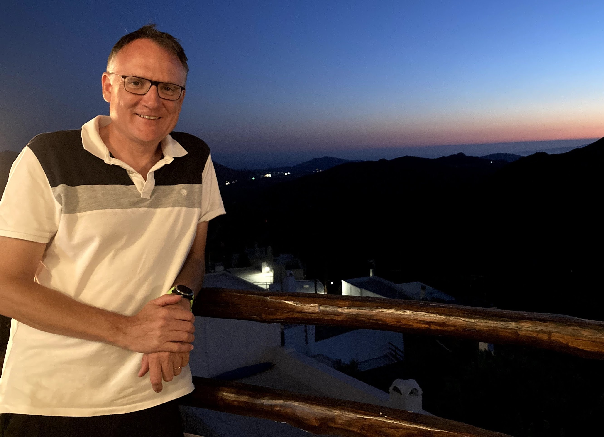
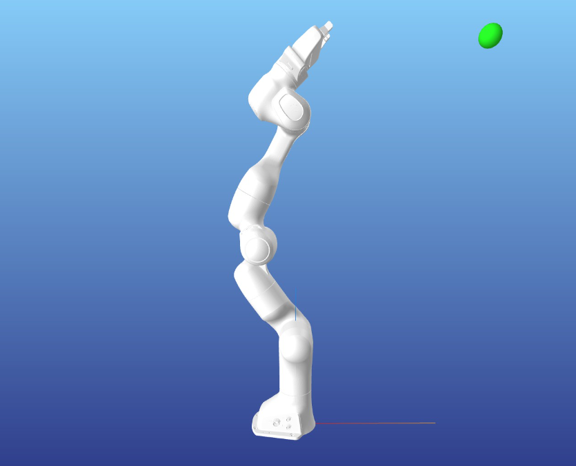
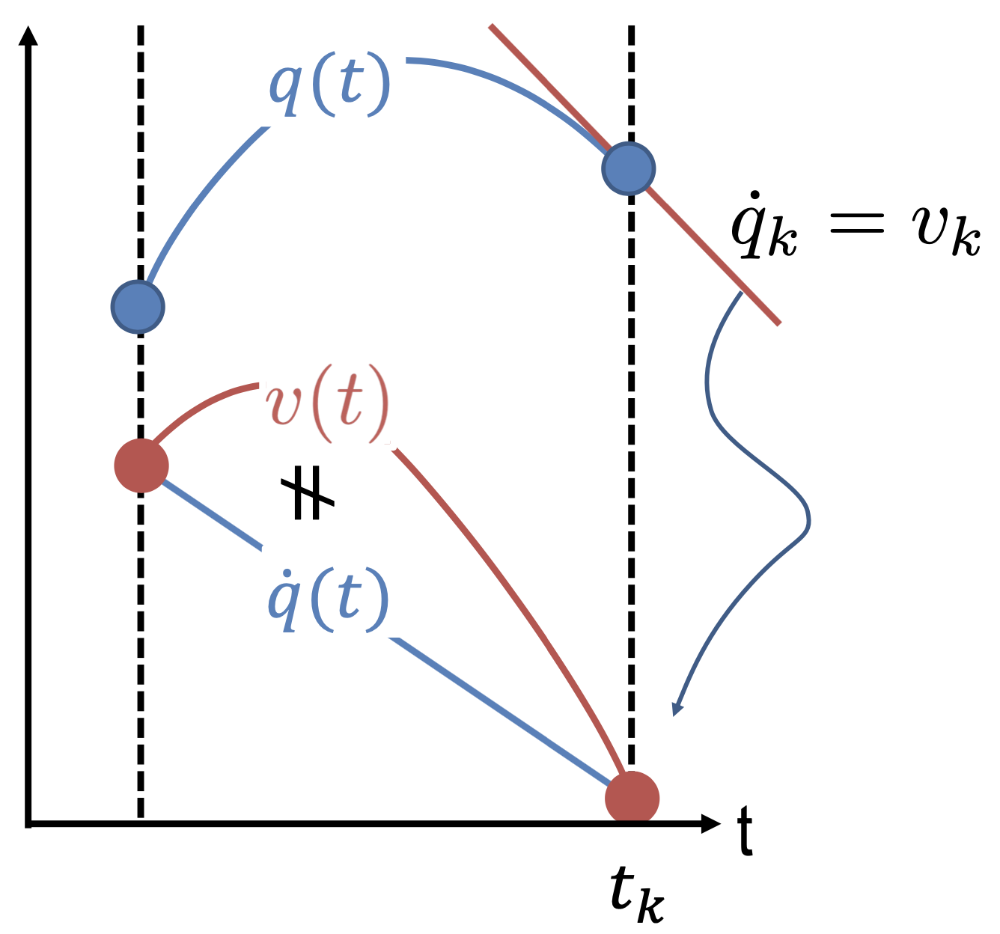
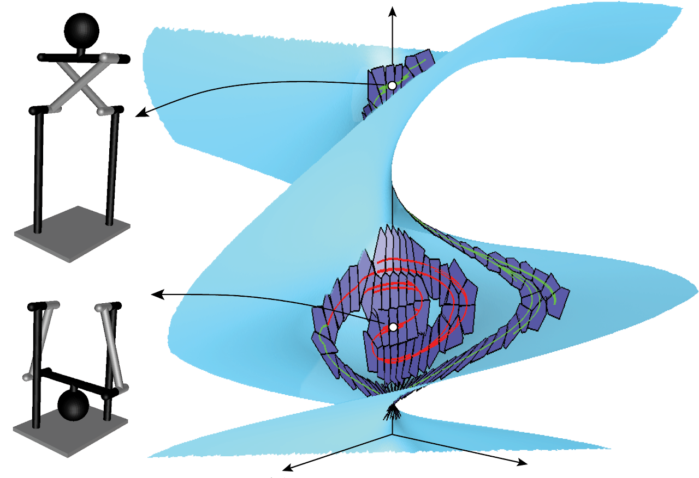

|  |
Lluís Ros Mechanical Engineer (1992) Ph.D. in Robotics and Automation (2000) CSIC Associate Researcher (2005-today) UPC Assistant Professor (2024-today, 2008-2016) Computational Robotics Group Institut de Robòtica i Informàtica Industrial (UPC / CSIC) Here you'll find information on my research interests, publications, projects, pictures, and selected links "I am a pessimist because of intelligence, but an optimist because of will" - Antonio Gramsci |
Springer book on robot singularitiesNews:
Robots and prototypes in our lab
Work on kinodynamic motion planning and trajectory optimization:

Collocation Methods for Second and Higher Order Systems
S. Moreno-Martín, L. Ros, and E. Celaya
Autonomous Robots 48, 2 (January 2024).
Full text (open access)
Test case videos: Cartpole - Bipedal walking - Ball throwing
It is often unnoticed that the predominant way to use collocation methods is fundamentally flawed when applied to optimal control in robotics. Such methods assume that the system dynamics is given by a first order ODE, whereas robots are often governed by a second or higher order ODE involving configuration variables and their time derivatives. To apply a collocation method, therefore, the usual practice is to resort to the well known procedure of casting an Mth order ODE into M first order ones. This manipulation, which in the continuous domain is perfectly valid, leads to inconsistencies when the problem is discretized. Since the configuration variables and their time derivatives are approximated with polynomials of the same degree, their differential dependencies cannot be fulfilled, and the actual dynamics is not satisfied, not even at the collocation points. This paper draws attention to this problem, and develops improved versions of the trapezoidal and Hermite-Simpson collocation methods that do not present these inconsistencies. In many cases, the new methods reduce the dynamics transcription error in one order of magnitude, or even more, without noticeably increasing the cost of computing the solutions.

Collocation Methods for Second Order Systems
S. Moreno-Martín, L. Ros, and E. Celaya
Robotics: Science and Systems 2022, New York
Full text - RSS pesentation - Poster - Cartpole code - Biped code - Symbolic derivations
In this paper we show that the usual collocation methods are fundamentally flawed when applied to second order systems like those that arise in robotics. Using such methods, the configuration and velocity trajectories are approximated with polynomials of a same degree, so the latter will not be the time derivative of the former in the computed solutions. This yields inconsistency problems, to the point that the actual dynamics is not even imposed at the collocation points. We show how this problem can be solved in the case of the trapezoidal and Hermite-Simpson collocation methods, which are commonly used in robotics. As a result, we obtain modified versions of these methods that increase the accuracy of the obtained trajectories in one, or even two orders of magnitude, without noticeably increasing the time needed to solve the NLP problems that result.
Direct Collocation Methods for Trajectory Optimization in Constrained Robotic Systems
R. Bordalba, T. Schoels, L. Ros, J. M. Porta, and M. Diehl
IEEE Trans. on Robotics. Vol 39. Issue 1. February 2023.
Full text - Video - Code in Github
This paper provides collocation methods for trajectory optimization in robots subject to holonomic and nonholonomic constraints. We review existing methods to transcribe the governing DAEs of these robots (the basic, Baumgarte, and PKT methods) and propose new ones to overcome their limitations (the projection and local coordinates methods). The goal is to keep the trajectories as close as possible to the constraint manifold without introducing artificial modifications to the system dynamics. The projection method is easier to apply, but only eliminates manifold drift after every time step. The local coordinates method is more costly, but keeps the continuous trajectory exactly on the manifold. A Randomized Kinodynamic Planner for Closed-chain Robotic Systems
R. Bordalba, L. Ros, and J. M. Porta
IEEE Trans. on Robotics. Vol. 37, n. 1, pp. 99 - 115, February 2021.
Full text - Video
Kinodynamic RRT planners are effective tools for finding feasible trajectories in many classes of robotic systems. However, they are hard to apply to systems with closed-kinematic chains, like parallel robots, collaborative arms, or legged robots keeping their feet in contact with the environment. The state space of such systems is an implicitly-defined manifold that complicates the design of the sampling and steering procedures, and leads to trajectories that drift from the manifold if standard integration methods are used. To address these issues, this paper presents a kinodynamic RRT planner that constructs an atlas of the state space incrementally, and uses this atlas to generate random states, and to dynamically steer the system towards such states. The steering method exploits the atlas charts to compute locally-optimal controls based on linear quadratic regulators. The atlas also allows the integration of the equations of motion using local coordinates, which eliminates any drift from the state manifold and results in accurate trajectories.
Spring 2024: I'll be teaching "Multibody System Dynamics" at the Master's Degree in Mechanical Engineering at UPC.
January 2024: Paper "Collocation Methods for Second and Higher Order Systems" published in Autonompus Robots.
June 2022: Sir Moreno presents our paper "Collocation methods for Second Order Systems" in RSS 2022, New York.
2020 - 2022: Busy looking for funding and organizing renovation works for our new lab at the Barcelona School of Industrial Engineering.
July 2022: Eduard Godayol defends his final master thesis on dynamic modelling and control of two-wheeled inverted pendulum robots. Congrats Eduard!
June 2022: Our paper on "Direct Collocation Methods for Constrained Robotic Systems" has been accepted in IEEE TRO June 2022: Siro Moreno and I attend RSS 2022 to present our work on "Collocation Methods for 2nd Order Systems" April 2021: Adriano del Río from University of Bremen joins us to work on trajectory optimization on the Panda robot. Welcome!
October 2021: Ricard Bordalba defends his Ph.D. thesis entitled Kinodynamic Planning and Control of Closed-chain Robotic Systems. Congrats Ricard! September 2021: Our new research project Kinodyn+ starts on 1 September. May 2021: Pere Giró defends his M.Sc. thesis on dynamic modelling and trajectory control of an omnidirectional tire-wheeled robot. Congrats Pere!
April 2021: Our paper with Iñigo on a model predictive controller for a mecanum-wheeled robot is accepted in NMPC 2021.
April 2021: Maxime Gautier defends his M.Sc. thesis on trajectory optimization of an omnidirectional tire-wheeled robot. Congrats Maxime!
March 2021: We've moved our group to our new lab in the Barcelona School of Industrial Engineering (ETSEIB). September 2020: Maxime Gautier from EPFL starts his M.Sc. thesis on dynamical modelling and trajectory planning for mobile robots. Welcome!
July 2020: Pere Giró joins our group again to work on his M.Sc. thesis on system identification for mobile robots. Welcome back!
June 2020: Paper on kinodynamic motion planning of closed-chain systems accepted in the IEEE Trans. on Robotics. September 2019: Siro Moreno joins us to pursue his Ph.D. on the design of energy-efficient and agile robot motions. Welcome Siro! July 2019: Iñigo Moreno defends his M.Sc. thesis on a model predictive controller for mecanum-wheeled robots. Congrats Iñigo! October 2018: Ricard Bordalba presents our LQR controller for parallel robots at IROS 2018, Madrid.
September 2018: Pere Giró defends his B.Sc. thesis on the control of a spherical pendulum with a cable-driven robot. Congrats Pere!
July 2018: Ricard Bordalba presents a kinodynamic planning method that avoids singularities at ARK 2018, Bologna. May 2018: Ricard Bordalba presents a kinodynamic motion planner for constrained systems at ICRA 2018 in Brisbane.
Fall 2018: Our new three-year project KINODYN begins (kinodynamic planning of efficient and agile robot motions).
September 2017: Oriol Bohigas is invited speaker at the Summer School on Singularities of Mechanisms, Linz. September 2017: Daniel González and I attend JA 2017 to present a new version of our ball-and-plate system (joint work with F. Thomas). August 2017: Ricard Bordalba presents our paper on kinodynamic planning for cable-suspended robots at CABLECON 2017
September 2016: Our book on robot singularities has just been published! See its companion web.
September 2016: Rita Roca has obtained her B.Sc. degree with a final project on the Hexaglide April 2016: New TRO paper: "Planning Wrench Feasible Motions for Cable-driven Hexapods" March-May 2016: Carlos Rosales and Oriol Bohigas co-found Beta Robots with Andreu Corominas. All the best for you guys!
March 2016: Ricard Bordalba starts his PhD November 2015: Alex Rajoy completes his M.Sc. with a nice Arduino-based 3-RRR robot that avoids singularities.
September 2015 - January 2016: New edition of our master course Geometric Fundamentals for Robot Design January 2015: Our new research project ROBCAB starts September 2014: Oriol Bohigas is invited speaker in the Advanced School on Singular Configurations of Mechanisms at CISM (Udine)
September 2014: Paper about the CUIK suite in the IEEE Robotics and Automation Magazine September 2014: Carlos Rosales wins the 3rd prize to the best Spanish PhD thesis in Robotics (2013 edition). See him presenting September 2014: Oriol Bohigas wins the 1st prize to the best Spanish PhD thesis in Robotics (2013 edition)
2014-2016: I've been teaching Automatic Control at the Barcelona School of Industrial Engineering (ETSEIB). May 2013: Paper at CK'2013 on the Symmetric Molecular Conjectures, with J. M. Porta, B. Schulze, A. Sljoka, and W. Whiteley May 2013: Oriol Bohigas has obtained his Ph.D. Congratulations! Watch the video of the defense.
January 2013: Carlos Rosales has obtained his Ph.D. Congratulations! Watch the video of the defense.
Lluís Ros
Institut de Robòtica i Informàtica Industrial
Edifici "H" ETSEIB, Campus Sud de la UPC
Av. Diagonal 647, Pavelló E (planta 1), 08028 Barcelona
http://www.iri.upc.edu/people/ros
Electronic mail: ros at iri dot upc dot edu (my old mail lros... is not properly working! Apologies for the lost mails)
Telephone: +34.93.401.57.51